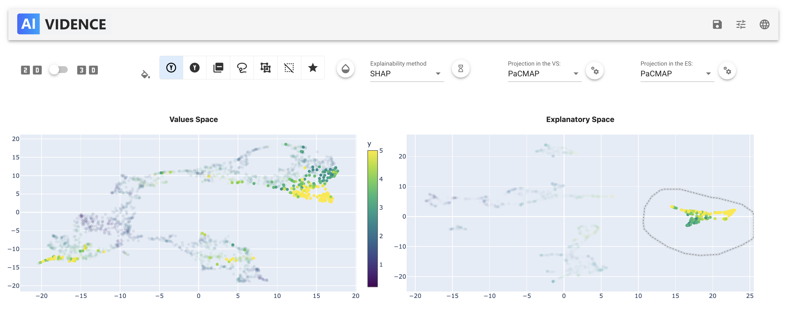
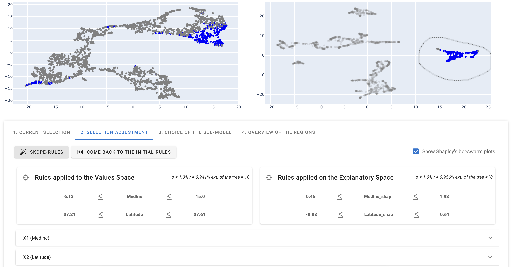
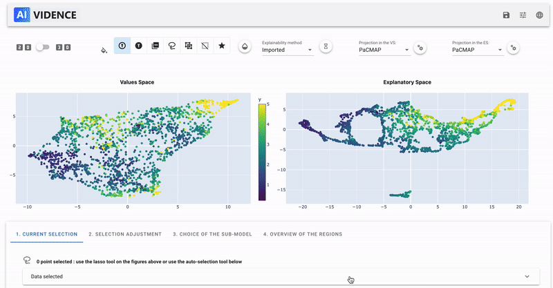

User guide
Here is a simple use case of the AntakIA package.
(find more examples in the this folder)
AntakIA is made to be used in a notebook. You can either:
-
open a notebook in your IDE if supported (e.g. VSCode). Just open a
.ipynbfile directly from here ! -
open a notebook using JupyterLab (recommended). To do so, open a terminal and type:
Tip
Using jupyterlab, you might want to manage your kernels. The following commands are useful:
To access to the list of kernels:
jupyter kernelspec list
To remove a kernel:
jupyter kernelspec remove old_kernel
Using the GUI
 Launch the GUI
Launch the GUI
After installing the package (see here), you can use the package in a notebook:
import pandas as pd
df = pd.read_csv('data/california_housing.csv')
X = df.iloc[:,0:8]
Y = df.iloc[:,9]
SHAP = pd.read_csv('data/pre_computed_SHAP_values.csv')
from sklearn.ensemble import GradientBoostingRegressor
model = GradientBoostingRegressor(random_state = 9)
model.fit(X, Y)
import antakia
dataset = antakia.Dataset(X, model = model, y=Y)
atk = antakia.AntakIA(dataset, explain = SHAP)
atk.startGUI()
 Modify the explainability method and the projections
Modify the explainability method and the projections
We can first modify the explainability method
and then the projections, by choosing between the different projections available or by modifying the parameters of the projection!
 Create our first Potato
Create our first Potato
We can now create our first Potato. Select the region of interest on one or the other space, and visualize the points selected in the other one.

 Apply Skope-Rules
Apply Skope-Rules
We can now apply Skope Rules on the selected region, in order to define it with a set of rules on the features.

 Modify the rules
Modify the rules
We can now modify the rules, by changing the parameters of the rules, or by adding or removing rules. This feature come with interesting data-visualization tools!
Apply sub-model
We can now apply a sub-model on the selected region. The sub-models are to be choosen in the list of the available models. To import your own modles, please refer to the documentation.
 Validate the region
Validate the region
We can now validate the region, and add it to the list of the validated regions.

 Have everything done for you : the magic button !
Have everything done for you : the magic button !
Click the button on the very bottom of the GUI, and let the magic happen ! The potatoes are created automatically using our dyadic-clusterign algorithm, skope-rules are found, the best submodel is chosen and the region is added to the list ! For more information about the dyadic-clustering, see utils.
